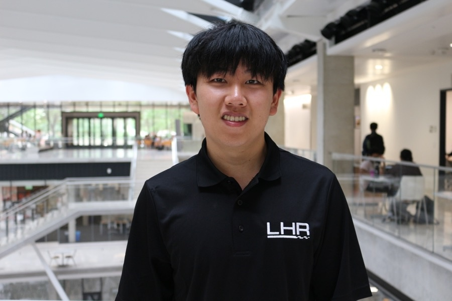
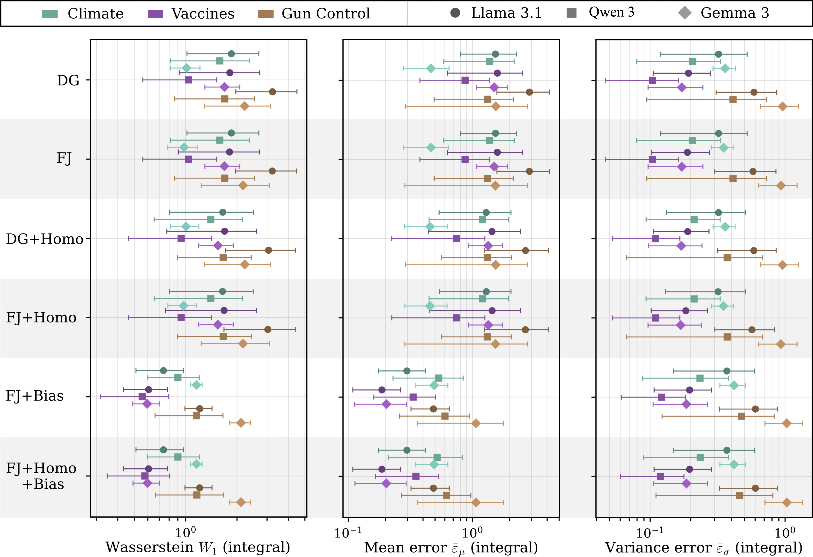

Formula SAE Engineering Work
Distributed Formula SAE telemetry architecture connecting BEVO on-car acquisition, MQTT, PostgreSQL, Kafka, Grafana dashboards, and live analysis applications.

Software engineer and researcher
I am a junior Electrical and Computer Engineering major at The University of Texas at Austin, where I am part of the ECE Honors Program and Engineering Honors.
My interests include AI/ML engineering and research, systems software, and infrastructure, especially work that connects intelligent software with reliable, production-quality systems.
Manuscript under review
We study opinion evolution in networks of LLM agents, where each agent holds a stance and updates it after seeing messages from its neighbors. We fit classical opinion-dynamics models to these trajectories to test which mechanisms best explain how opinions propagate in LLM networks.

NeuS 2026
We propose a framework that combines the flexibility of vision-language foundation models with the reliability of formal logistics planners. The system estimates when a user's intent is unclear, asks for clarification when needed, and uses those confidence signals to tune the model toward the intended task.

Distributed Formula SAE telemetry architecture connecting BEVO on-car acquisition, MQTT, PostgreSQL, Kafka, Grafana dashboards, and live analysis applications.
Conditional waveform diffusion project with NSynth preprocessing, 1D U-Net denoising, contrastive label alignment, and an interactive inference demo.
Class-winning ECE319H embedded handheld game built with Travis Edwards on a TI MSPM0 LaunchPad, using direct hardware input, display rendering, and microcontroller-driven feedback.
Professional, research, and engineering roles.